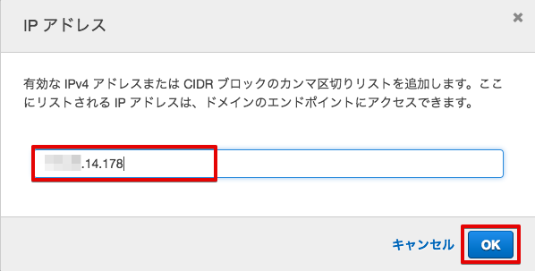
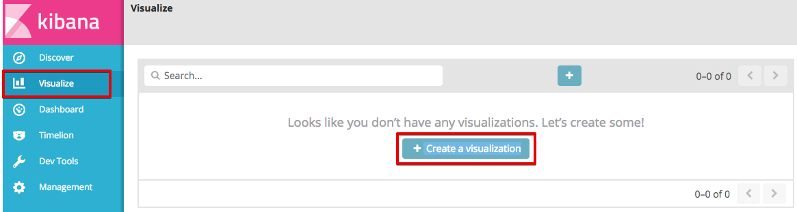

7. シナリオ1＋: センサーデータの送信¶
Intel Edisonに接続された照度センサーと温度センサーのデータをEdison上のプログラムで定期的にAWS IoTに送信します。AWS IoTではルールに基づきElasticSearch ServiceやFirehose経由でS3に保存します。WebブラウザからはElasticSearch Service上のKibanaにアクセスして保管されているデータをグラフ表示できます。

送信するセンサーデータは以下のJSONフォーマットとします。
{
"timestamp": "2015-10-24T14:16:37.305Z", ← ISO8601形式
"illuminance": "300", ← 照度センサーのアナログ値
"temperature": "200" ← 温度センサーのアナログ値
}
7.1. プログラムの実行¶
シナリオ1: センサーデータの送信 で使用した、~/aws-iot-handson-dojo-basic/scenario1/main.js を実行して下さい。このシナリオ終了時までそのまま動かし続けます。ハンズオン終了時にプログラムを終了させる場合はCtrl+Cを押します。
# cd ~/aws-iot-handson-dojo-basic/scenario1/
# node main.js
Connected to Message Broker
Publishing: {"timestamp":"2016-04-06T07:05:08.973Z","illuminance":343,"temperature":510}
Publishing: {"timestamp":"2016-04-06T07:05:14.035Z","illuminance":343,"temperature":512}
Publishing: {"timestamp":"2016-04-06T07:05:19.084Z","illuminance":343,"temperature":512}
7.2. ElasticSearch Serviceのドメインを作成する¶
7.2.1. グローバルIPアドレスを調べる¶
Kibanaを特定のIPアドレスからだけアクセスさせるために、PCのグローバルIPアドレスを調べます。下記のURLにアクセスしてください。
https://www.cman.jp/network/support/go_access.cgi

グローバルIPアドレスが表示されるので、ノートパッドなどに記録しておいて下さい。
7.2.2. ElasticSearch Serviceのドメインを作成¶
サービス一覧から[ElasticSearch Service] をクリックして開きます。

Elasticsearch Serviceの画面が開きますので、[新しいドメインの作成] をクリックします。

[Elasticsearch ドメイン名] に、”awsioth-sensor-<参加者番号>” と入力して、[次へ] をクリックして下さい。
| 設定項目 | 値 |
|---|---|
| Elasticsearch ドメイン名 | awsioth-sensor-<参加者番号> |
次の画面では、何も入力せずに、[次へ] をクリックして下さい。 [テンプレートを選択] で、 特定のIPからのドメインのアクセスを許可 を選択して下さい。

IPアドレスの入力画面が表示されるので、先ほど記録した “グローバルIPアドレス” を入力し、[OK] を押して下さい。
アクセスポリシーが表示されるので、[次へ] をクリックして下さい。このIPアドレスからのみKibanaへのアクセスが許可されます。

確認画面が出てきますので、[確認] をクリックして下さい。 Elasticsearch ドメインが出来るまで、10数分かかります。

7.3. ElasticSearch Serviceへ保存するAWS IoT ルールを作成¶
マネージメントコンソールのサービス一覧から[AWS IoT]を開き、左側のメニューから [ルール] を選択します。

その後、[作成] をクリックします。
スクリーンショットの赤枠で囲んだ部分について、以下の項目を入力し、[アクションの追加] をクリックします。
| 設定項目 | 値 |
|---|---|
| 名前 | SaveToElasticsearch_<参加者番号> |
| SQL バージョンの使用 | 2016-03-23 |
| 属性 | *, topic(1) AS place, topic(2) AS position |
| トピックフィルター | place-a/position-<参加者番号> |

[アクションを追加して下さい] 画面で、[Amazon Elasticsearch Service にメッセージを送信する] を選択し、[アクションの設定] をクリックします。
[アクションの設定] 画面にて、下記の項目を入力します。
| 設定項目 | 値 |
|---|---|
| ドメイン名 | awsioth-sensor-<英数字> (リストから選択) |
| ID | ${timestamp()} |
| 索引 | sensordata-<参加者番号> |
| タイプ | scenario1 |
“*IAM ロール名” 横の [新しいロールの作成] ボタンを押して、Elasticsearch Search用のロールを作成します。
“*IAM ロール名” 欄に、”SaveToElasticSearchRole-<参加者番号>” と入力し、[新しいロールの作成] ボタンを押します。
| 設定項目 | 値 |
|---|---|
| IAM ロール名 | SaveToElasticSearchRole-<参加者番号> |
新しいロールが作成されるので、メニューから、SaveToElasticSearchRole-<参加者番号> を選択し、[ロールの更新] ボタンを押します。
ロールが正常に更新されると、下記のメッセージが表示されます。

その後、[アクションの追加] ボタンを押します。
最後に、確認画面が出ますので、[ルールを作成する] ボタンを押して、ルールを作成して下さい。

7.4. Kibanaでデータを確認¶
マネージメントコンソールのサービス一覧から[Elasticsearch Service]を開きます。[検索可能なドキュメント] の数字が0より大きくなっていることを確認します。[クラスターの状態] が [黄色] になっていのはシングルノード構成のためでありハンズオンでは問題ありません。

[ドメイン] のリンクをクリックして開きます。

Kibanaで表示させるindexを指定します。以下の値を入力して、[Create]をクリックします。
| 設定項目 | 値 |
|---|---|
| Index name or pattern | sensordata-<参加者番号> |
| Time-field names | timestamp (リストから選択) |

[illuminance], [temperature], [timestamp]のフィールドが表示されている事を確認します。
メニューにある[Discover]をクリックし、データが届いている事を確認します。
メニューにある[Visualize]をクリックし、[+ Create a visualization]をクリックします。
グラフの種類として[Area chart]を選択します。
[sensordata-<参加者番号>] をクリックします。
Y軸にサンプル数(Count)が設定されている事を確認し、X軸の設定を開始するために [X-Axis] をクリックします。

[Aggregation]に[Data Histogram]を選択し、画面上部の [▶] をクリックすると、右側にグラフが表示されることを確認します。

右上の ①[Save] ボタンをクリックし、タイトルに ②[Sensor Data - Sampling Count]と入力し、③[Save] をクリックします。

保存されたら、[▼ Y-Axis]①を押しY軸の設定を表示します。[Aggregation] を [Average]② に変更し、[Field] に [illuminance]③ を指定します。[▶]④(Apply)をクリックしてグラフに適切なデータが表示されることを確認します。

右上の ①[Save] ボタンをクリックし、タイトルを ②[Sensor Data - Illuminance] に変更し、③[Save as a new visualization] をチェックし、④[Save]をクリックします。
保存されたら、Y軸の設定の [Field] を [temperature]① に変更し、[▶]②(Apply)をクリックしてグラフに適切なデータが表示されることを確認します。
右上の ①[Save] ボタンをクリックし、タイトルを ②[Sensor Data - Temperature] に変更し、③[Save as a new visualization] をチェックし、④[Save]をクリックします。

メニューにある[Dashboard]をクリックし、[Create a dashboard] をクリックします。
[Add] ボタンをクリックします。

[Sensor Data - Sampling Count]をクリックし、下側にグラフが追加されたのを確認します。
同様に、[Sensor Data - Illuminance]、[Sensor Data - Temperature]をクリックし、下側にグラフが追加されたのを確認します。確認したら、[＜]ボタンを押して閉じます。

右上の ①[Save] ボタンをクリックし、タイトルを ②[Sensor Data] と入力し、③[Store time with dashboard] にチェックを入れ、④[Save]をクリックします。

右上の[Last 15 minutes]をクリックすると、表示する期間や表示を自動更新する頻度を変更できます。
グラフをマウスで操作して、位置やサイズを変更することもできます。

7.5. Firehoseのストリームを作成¶
マネージメントコンソールのサービス一覧から[Kinesis]を開きます。[Firehoseに移動]をクリックします。

[Create Delivery System]をクリックして、Firehoseのストリームを作成します。
Step 1 で、Delivery stream nameとして、FromIotToS3-<参加者番号> を設定し、他の設定は、そのままにして [Next] をクリックします。
| 設定項目 | 値 |
|---|---|
| Delivery stream name | FromIotToS3-<参加者番号> |
Step 2 は、なにも設定せず [Next] をクリックします。
Step 3 で、Destination を Amazon S3 として、S3バケットを選択し、[Next] をクリックします。
| 設定項目 | 値 |
|---|---|
| Destination | Amazon S3 (ディフォルトでS3になっています。) |
| S3 bucket | awsiothandsonstack-<参加者番号>-sensorstoragebucket-<英数字> |
Step 4 で、S3のバッファーの設定を行います。
| 設定項目 | 値 |
|---|---|
| Buffer size | 1 |
| Buffer Interval | 60 |
IAM role で、[Create new, or Choose] をクリックすると、IAMの画面が開きます。

AWSIoTHandsonStack-<参加者番号>-FirehoseDeliveryRole-<英数字> を選択し、[許可] をクリックします。
IAMの設定画面が閉じますので、[Next] をクリックします。

Step 5 で確認画面が表示されますので、[Create delivery stream] をクリックします。

S3 Delivery Streams が作成されました。[FromIotToS3-<参加者番号>] の [Status] が [ACTIVE]になるのを待ちます。

7.6. Firehoseに送信するAWS IoT ルールを作成¶
マネージメントコンソールのサービス一覧から [AWS IoT] を開き、左側のメニューから [ルール] を選択します。
その後、[作成] をクリックします。
スクリーンショットの赤枠で囲んだ部分について、以下の項目を入力し、[アクションの追加] をクリックします。
| 設定項目 | 値 |
|---|---|
| 名前 | SaveToFirehose_<参加者番号> |
| SQL バージョンの使用 | 2016-03-23 |
| 属性 | *, topic(1) AS place, topic(2) AS position |
| トピックフィルター | place-a/position-<参加者番号> |

[アクションを追加して下さい] 画面で、[Amazon Kinesis Firehose ストリームにメッセージを送信する] を選択し、[アクションの設定] をクリックします。
[アクションの設定] 画面にて、下記の項目を入力します。
| 設定項目 | 値 |
|---|---|
| ストリーム名 | FromIotToS3-<参加者番号> (リストから選択) |
| Separator | \n (改行) |
| IAM ロール名 | AWSIoTHandsonStack-<参加者番号>-SaveToFirehoseRole-<英数字> (リストから選択) |
“IAM ロール名” から、AWSIoTHandsonStack-<参加者番号>-SaveToFirehoseRole-<英数字>] を選択し、[ロールの更新] ボタンを押します。ロールが正常に更新されると、下記のメッセージが表示されます。
その後、[アクションの追加] ボタンを押します。
最後に、確認画面が出ますので、[ルールを作成する] ボタンを押して、ルールを作成して下さい。

7.7. S3に保存されたデータを確認する¶
サービス一覧から[S3]をクリックして開きます。

“awsiothandsonstack-<参加者番号>-sensorstoragebucket-<英数字>” のバケットをクリックします。

データが保存されたフォルダまで辿って下さい。
60秒周期でファイルが保存される設定になっているため、ファイルが現れるまで数分かかることがあります。画面を更新しながら、待って下さい。

ファイルをクリックすると、ファイルの概要が表示されます。[ダウンロード] をクリックしてダウンロードして内容を確認して下さい。

下記の形式のセンサーデータが確認できます。
{"timestamp":"2017-08-21T10:30:18.595Z","illuminance":748,"temperature":519,"place":"place-a","position":"position-<参加者番号>"}